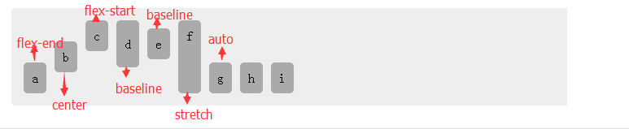

语法：
align-self:取值
说明：
align-self 设置或检索弹性盒子元素在侧轴（纵轴）方向上的对齐方式。
| 属性值 | 说明 |
|---|---|
| auto | 如果'align-self'的值为'auto'，则其计算值为元素的父元素的'align-items'值，如果其没有父元素，则计算值为'stretch'。 |
| flex-start | 弹性盒子元素的侧轴（纵轴）起始位置的边界紧靠住该行的侧轴起始边界。 |
| flex-end | 弹性盒子元素的侧轴（纵轴）起始位置的边界紧靠住该行的侧轴结束边界 |
| center | 弹性盒子元素在该行的侧轴（纵轴）上居中放置。（如果该行的尺寸小于弹性盒子元素的尺寸，则会向两个方向溢出相同的长度）。 |
| baseline | 如弹性盒子元素的行内轴与侧轴为同一条，则该值与'flex-start'等效。其它情况下，该值将参与基线对齐。 |
| stretch | 如果指定侧轴大小的属性值为'auto'，则其值会使项目的边距盒的尺寸尽可能接近所在行的尺寸，但同时会遵照'min/max-width/height'属性的限制。 |
使用方法：
align-selg:flex-start; /*弹性盒子元素靠近该行的起始位置*/
兼容性：
- 浅绿 = 支持
- 红色 = 不支持
- 粉色 = 部分支持
| 支持版本\类型 | IE | Firefox | Safari | Chrome | Opera |
|---|---|---|---|---|---|
| 较早版本 | 6.0-10.0 | 4.0-19.0 | 5.1.7-6.0 | 21.0-28.0-webkit- | 9.5-12.0 |
| 较新版本 | 11.0 | 20.0 | 7.0-webkit- | 29.0 | 12.1 |
橘色说明要加浏览器的前缀
事例：
<ul id="box" class="box">
<li>a</li>
<li>b</li>
<li>c</li>
<li>d</li>
<li>e</li>
<li>f</li>
<li>g</li>
<li>h</li>
<li>i</li>
</ul>
.box{
display:-webkit-flex;
display:flex;
-webkit-align-items: flex-end;
height:100px;margin:0;padding:10px;border-radius:5px;list-style:none;background-color:#eee;}
.box li{margin:5px;padding:10px;border-radius:5px;background:#aaa;text-align:center;}
.box li:nth-child(1){
-webkit-align-self: flex-end;
align-self: flex-end;
}
.box li:nth-child(2){
-webkit-align-self: center;
align-self: center;
}
.box li:nth-child(3){
-webkit-align-self: flex-start;
align-self: flex-start;
}
.box li:nth-child(4){
-webkit-align-self: baseline;
align-self: baseline;
padding:20px 10px;
}
.box li:nth-child(5){
-webkit-align-self: baseline;
align-self: baseline;
}
.box li:nth-child(6){
-webkit-align-self: stretch;
align-self: stretch;
}
.box li:nth-child(7){
-webkit-align-self: auto;
align-self: auto;
}
